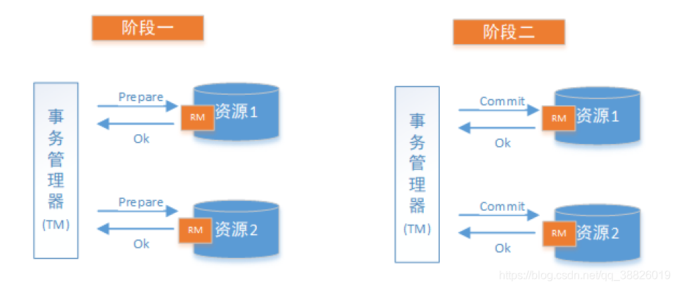
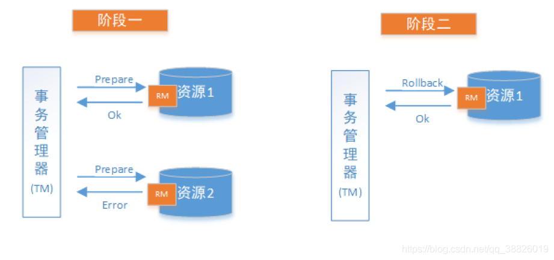

什么是2PC
2PC即两阶段提交协议，是将整个事务流程分为两个阶段，准备阶段（Prepare phase）、提交阶段（commit phase），2是指两个阶段，P是指准备阶段，C是指提交阶段。
举例：张三和李四好久不见，老友约起聚餐，饭店老板要求先买单，才能出票。这时张三和李四分别抱怨近况不如意，囊中羞涩，都不愿意请客，这时只能AA。
只有张三和李四都付款，老板才能出票安排就餐。但由于张三和李四都是铁公鸡，形成了尴尬的一幕：
准备阶段：老板要求张三付款，张三付款。老板要求李四付款，李四付款。
提交阶段：老板出票，两人拿票纷纷落座就餐。
例子中形成了一个事务，若张三或李四其中一人拒绝付款，或钱不够，店老板都不会给出票，并且会把已收款退回。整个事务过程由事务管理器和参与者组成，店老板就是事务管理器，张三、李四就是事务参与者，事务管理器负责决策整个分布式事务的提交和回滚，事务参与者负责自己本地事务的提交和回滚。在计算机中部分关系数据库如Oracle、MySQL支持两阶段提交协议。
阶段详情
准备阶段（Prepare phase）
事务管理器给每个参与者发送Prepare消息，每个数据库参与者在本地执行事务，并写本地的Undo/Redo日志，
此时事务没有提交。（Undo日志是记录修改前的数据，用于数据库回滚，Redo日志是记录修改后的数据，用于提交事务后写入数据文件）
提交阶段（commit phase）
如果事务管理器收到了参与者的执行失败或者超时消息时，直接给每个参与者发送回滚(Rollback)消息；否则，发送提交(Commit)消息；
参与者根据事务管理器的指令执行提交或者回滚操作，并释放事务处理过程中使用的锁资源。
注意：必须在最后阶段释放锁资源。
下图展示了2PC的两个阶段，分成功和失败两个情况说明：
成功情况

失败情况

XA协议
是X/OPEN 提出的分布式事务处理规范。XA则规范了TM与RM之间的通信接口，在TM与多个RM之间形成一个双向通信桥梁，从而在多个数据库资源下保证ACID四个特性。目前知名的数据库，如Oracle, DB2,mysql等，都是实现了XA接口的，都可以作为RM。
XA是数据库的分布式事务，强一致性，在整个过程中，数据一张锁住状态，即从prepare到commit、rollback的整个过程中，TM一直把持折数据库的锁，如果有其他人要修改数据库的该条数据，就必须等待锁的释放，存在长事务风险。
优缺点
优点：原理简单，实现方便
缺点：同步阻塞，单点问题，数据不一致，缺乏容错机制
2PC协议明显的优点就是：原理简单、容易实现。相比优点，缺点更多：
- 同步阻塞 每个参与者都需要等待其他参与者完成后，才能继续下一阶段，也就是说事务操作逻辑都是处于阻塞状态，极大限制了分布式系统性能
- 数据不一致 在第二阶段，如果出现网络异常导致一部分参与者收到了commit请求，一部分参与者没有收到commit请求，结果会是一部分参与者提交了事务，一部分参与者无法进行事务提交
- 单点问题/脑裂 协调者在2PC中，太过重要，当协调者宕机，整个集群将不可用。更可怕的是，协调者在第二阶段之前宕机，那么所有参与者将一直锁定准备阶段的事务资源。脑裂（动态选主情况下）是指因为网络原因，出现多个协调者。
- 太过保守 任何一个节点故障，都会导致整个事务协调失败，换句话说没有完善的容错机制。
引用:https://blog.csdn.net/qq_38826019/article/details/119342296

...
...
This is copyright.